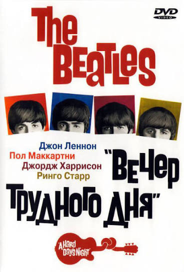
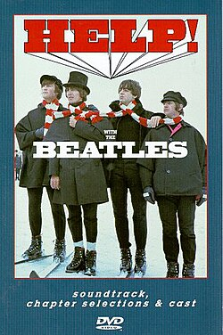
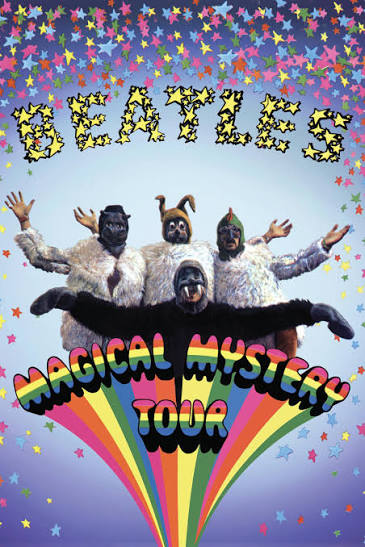
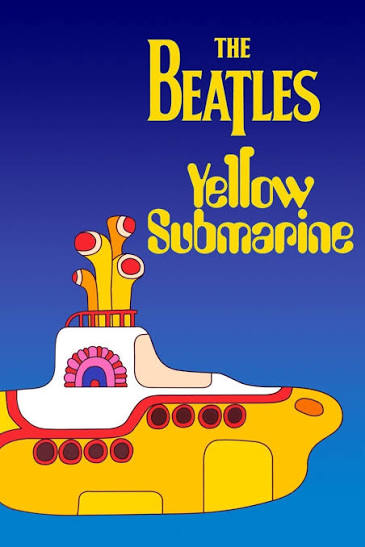
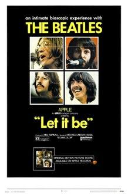

Автор проекта: Лазарева Элина Николаевна | Группа: ЭФЦ421-9
Главная | Информация | История | Дискография | Фильмография | Ссылки | Магазин | Контакты
| Кадр / Постер | Год | Название фильма | Режиссер | Описание |
|---|---|---|---|---|
 |
1964 | A Hard Day's Night (Вечер трудного дня) |
Ричард Лестер | Музыкальная комедия о нескольких днях из жизни группы на пике «битломании». Номинирован на «Оскар». |
 |
1965 | Help! (На помощь!) |
Ричард Лестер | Приключенческая цветная комедия. Музыканты скрываются от восточного культа, пытающегося вернуть священное кольцо. |
 |
1967 | Magical Mystery Tour (Волшебное таинственное путешествие) |
The Beatles | Психоделический телевизионный фильм о сюрреалистическом путешествии участников группы на автобусе. |
 |
1968 | Yellow Submarine (Желтая подводная лодка) |
Джордж Даннинг | Культовый полнометражный анимационный фильм с ярким психоделическим визуальным стилем и музыкой квартета. |
 |
1970 | Let It Be (Пусть будет так) |
Майкл Линдси-Хогг | Документальный фильм о процессе студийной записи альбома и последнем концерте группы на крыше здания Apple. |
© 2026 Лазарева Элина Николаевна (Группа ЭФЦ421-9). Все права защищены.